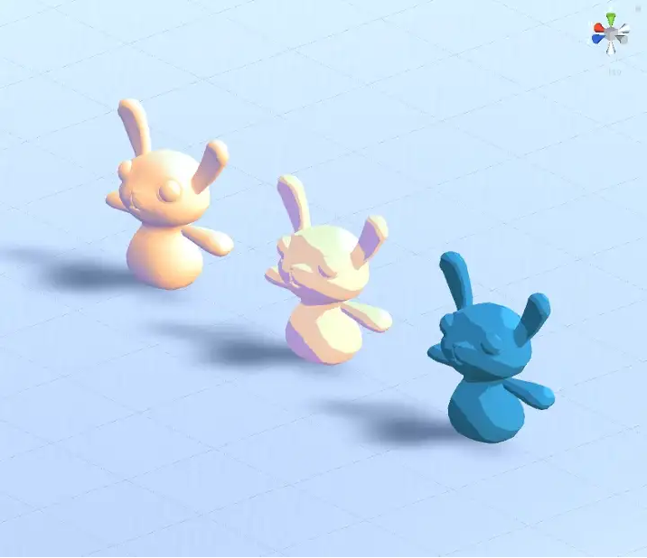

浅谈数字人仿真的渲染技术（四）
前言
这篇文章是我在OGEEK上做过的《浅谈数字人仿真的渲染技术》分享的最后一部分，这一部分的内容主要包含的内容是**非真实感渲染（Non-photorealistic Rendering, NPR）**技术，通常这项技术会被用在渲染卡通风格的内容。
非真实感渲染
前面的渲染技术一般都是用于高真实度数字人的渲染，接下来我们来介绍一下NPR。
什么是NPR
NPR，我们一般指的是非真实感渲染（Non-photorealistic Rendering），它是相对于**真实渲染（Photorealistic Rendering）**的。
真实感渲染的目的在于渲染出照片级别的高真实度画面；而非真实感渲染，他的目的多种多样，它可以模拟艺术化的绘制风格，呈现出手绘的效果。
这是游戏”犬神“的画面，它的渲染模拟出一种独特的水墨风格。
这是游戏”荒野之息“的画面，它就有点类似于日本动画的风格。
他们显然不是想游戏画面看起来和显示世界一模一样的，所以利用NPR来突出自己独特的美术基调，展现不同的美术风格，从而吸引玩家。
NPR在数字人的体现
在数字人的概念在互联网中异常火热的时候，业界也出现了很多热门虚拟数字人或虚拟偶像，如下面这张图里面列举的一些例子。
最左边的的Miquela（美国），以及最右边的AYAYI（燃麦科技）是主打写实，超写实风格的数字人。
中间的四个，分别是洛天依，初音，鹿鸣和暖暖，她们的美术风格其实都多多少少有带点二次元风格，如果大家有关注虚拟主播这个行业的话，其实很多虚拟主播都是带着二次元风格的化身（皮套）。
二次元风格，或者卡通风格的渲染，都属于NPR的渲染风格。NPR在数字人的应用上也是很广泛的。
当然，非真实感是一个非常宽泛的定义，我们这里不会去展开太多，今天我们只关注于其中的卡通渲染，针对这个领域来介绍一些相关的渲染技术。
卡通渲染
卡通渲染是NPR领域应用最广的渲染技术之一，那么他和真实感渲染有很多地方是不一样的，其中最主要的两点，就是描边处理，和艺术化着色。
接下来我们就来重点聊一聊这两个方面。
描边
首先来介绍一下描边处理。
描边几乎是所有非真实渲染都要实现的效果，它比较容易呈现出一种手绘的视觉风格。目前主流使用的描边技术包括几类，分别是基于几何的生成方法，基于视角的勾边，基于图像处理的勾边。这三种方法之间也可以混合使用。我们今天也会主要介绍这三种描边。
基于几何的生成方法
首先我们来介绍一些基于几何生成的描边方法。
这个方法的特点是，描边本身是一个单独的几何体，这个几何体通过特殊的方式渲染出来，结合原本渲染的模型，可以达到描边的效果。
基于几何的描边需要有两个渲染pass。
-
在第一个Pass中只渲染背面的面片。在第一个Pass进行描边处理时，我们可以利用顶点着色器将物体本身沿法线方向进行一定的扩展，得到一个比原来模型略大一些的模型来实现物体的轮廓可见的效果，这种方法一般被称为Shell method或者Halo method；用这个扩大的模型来实现描边的效果。
也可以使用另外一种叫做z-bias的方法，也是绘制模型背面，但不膨胀模型，而是把背面顶点的Z值稍微向前偏移一点点，使得背面的些许部分显示出来形成描边效果。但是这种方法比较不可控，实现的效果较Shell method差很多。 -
然后第二个Pass中对模型进行正常的渲染。
下面的这张图是一个大致的原理介绍。
几何生成方法描边的优点是实现简单，可以得到轮廓均匀的描边效果，对大部分模型都有效。
同样该方法也有很多的缺点：无法用来描边棱角分明的模型，比如立方体；一般只能用来勾勒物体的外部轮廓(Silhouette)而无法绘制物体内部的轮廓(Contour)；需要处理双倍的Mesh数量，性能不友好。
基于视角的勾边
接下来介绍基于视角的勾边，这部分的计算依赖于我们的一个直觉观察：当我们的视线和某个表面相切时，这个表面上的像素点往往就是模型的边缘，基于这个观察，我们可以用视线的向量和模型法线向量的点乘来估计一个像素的“边缘程度”，当边缘程度超过一定阈值的时候，就判定其为描边区域。
当然，这个值也可以用来作为纹理坐标去采样一张预定义的“轮廓纹理”。
基于视角的描边，处理起来相对比较简单，但是最大的缺点是线宽粗细差别较大，不易控制。
基于图像处理的勾边
最后是基于图像处理的描边，这类方法的实现可以说更接近于“边缘”这一概念的本质定义。
什么是“边缘”呢？边缘就是在深度或者法线上不连续的位置。为了获取边缘，我们只需要在图片上找到不连续的位置即可，因此，我们一般将深度信息和法线信息的形式传入，运用边缘检测算法去寻找这些像素。
这类方法的优点是描边的线宽一致，适应性广，大部分的边缘检测都可以利用该方法，缺点是需要额外的法线和深度信息。
由于近年来流行的延迟渲染框架，法线和深度本来就是G-Buffer的一部分，因此往往不需要额外绘制法线和深度的信息。
如果没有G-Buffer，需要单独获取深度图和法线图，会有额外的性能消耗。而且对于深度和法线变化很小的地方，可能无法检测出来，比如桌上的纸张。
其实除了边缘，基于图像处理还可以根据漫反射颜色的变化，光照区域的变化，甚至自定义模板等等来自定义想要处理的勾边。
边缘检测的算法这里不深入去拓展了，提一下比较主流的有sobel算子，robert算子，prewitt算子等等。可以去参考图像识别、处理相关的知识。
艺术化着色
然后我们再来聊一聊另外一个重点部分，就是艺术化着色。
艺术化着色很考验美术的能力，好的着色效果需要有好的美术风格和造型，当然这里我们就不深入讨论这块了（程序员审美），我们还是简单介绍一下比较常用来实现艺术化着色的技术。
这里主要介绍两个方式，即卡通着色和基于色调的着色。
卡通着色
卡通渲染的着色方式是Cel Shading或者Toon Shading，Cel来自于Celluloid，是传统卡通的制作材料，Toon来自于卡通Cartoon。
他们的基本思想就是降低色阶，与现实环境丰富的色阶相比，卡通渲染尽量减少使用的色阶，从而实现手工着色的效果。
下面这张图的场景是采用了PBR，可以看到他的色阶是非常多的，阴影，高光过度很平滑。
这张图的场景我们降低了色阶，体现比较明显的是橙色的球的阴影部分，稍微有点卡通的风格了。
这张图片则是进一步降低了色阶，可以看到有一种很强烈的手工着色的感觉，有种古早卡通的风格。
实现这种效果的方法很多，一般计算光照的时候，有一个步骤会根据模型法线和光线法线的点乘，得到一个数值，这个数值会影响最终光照的效果。在PBR中这个数值的影响是连续的，但是在NPR中，我们可以提前定义一个分段函数，这个分段函数定义一个数字区间的颜色值。
打个比方这个球，可以点乘结果大于0.85用亮橘色，小于0.5用黑色，中间可以继续分段。如果想要平滑过渡的效果，也可以在函数的分段中用平滑计算的方式获取一个插值。
目前来说大部分的卡通渲染，会将N和L的点乘结果对应到一张Ramp Texture上， 如下图所示，根据ramp texture上的颜色数据上颜色。这样美术就可以比较方便的控制想要的颜色效果。
下面这张图是对应ramp texture对应的效果。

另外为了模拟PBR中光线和视角相关的效果(菲涅尔项)，还需要视角相关的信息。通过法线和视线方向的点乘得到另一个纹理坐标在ramp texture上取值，ramp texture的制作也需要考虑相关的因素。

基于色调的着色
最后我们简单介绍一下tone based shading，他的主要思想是首先由美术指定冷色调和暖色调，比如说冷色调设定为蓝色，暖色调设定为橙色。而最终模型着色将根据法线和光线的夹角，在这两个色调的基础上进行插值。
下面是基于色调着色的公式。
这里公式里面的l是光线照射方向，和我们前面BRDF等公式里面的光线方向相反。这里可以看到，公式计算中法线和光线向量的点乘越低，暖色调的比例就越高，冷色调的比例就越低，反之亦然。
what’s more
当然，目前我们说介绍的这些，也只是对NPR的一个最基础的介绍了，为了更好的效果，很多细节需要优化。
比如说可能会有更加风格化的高光和阴影，如下图所示。

以及还需要将环境光照的影响考虑进来。
还有就是现在很多产品选择的在NPR中使用PBR，就比如说我们前面在PBR里面介绍的kajiya-kay的头发高光计算方法，比如说很多二次元风格的模型会在皮肤眼睛等部位同样使用次表面散射的模型。
未来数字人技术的展望
最后稍微讲一下我们对未来数字人技术的展望吧。
首先由于其渲染的复杂度和性能消耗，高保真类型的数字人可能会更趋近于在云端渲染，包括我们的端云渲染平台andeverse，大家可以关注一下。云渲染可以利用云端的强大的分布式硬件，以及高速网络， 实现在一般设备上的真实人物表现。
同时今年大热的AI技术成果爆发，也让我们不禁想去探索AI辅助的数字人生产制作流程。它能对整个生产管线的效率和效果有多大的提升。
另外其实皮肤的效果是否还有更进一步的解决办法，因为目前实时渲染还是采用一种近似方法。皮肤下面其实离毛细血管是比较近的，在人类在表现激动情绪的时候会有脸红等肤色的变化的细节。这些细节的完善，可以帮助我们进一步提升写实类人物的渲染，从而走出恐怖谷。
结语
《浅谈数字人渲染技术》的内容终于总结完了，这个分享我准备了很久，ppt在交付前一再精简，最后还是有55页，也是整整拆分成四篇文章才勉强将里面的内容将完。
这次分享也给了我很多的启发，让我熟悉了数字人渲染的相关技术，以及整个产业的发展。里面的内容广泛而深入，这几篇浅显的文章既希望能够帮助到有需要的人，也是我对自己的一次小小的总结。
希望后面有机会能够进一步深入这个领域。